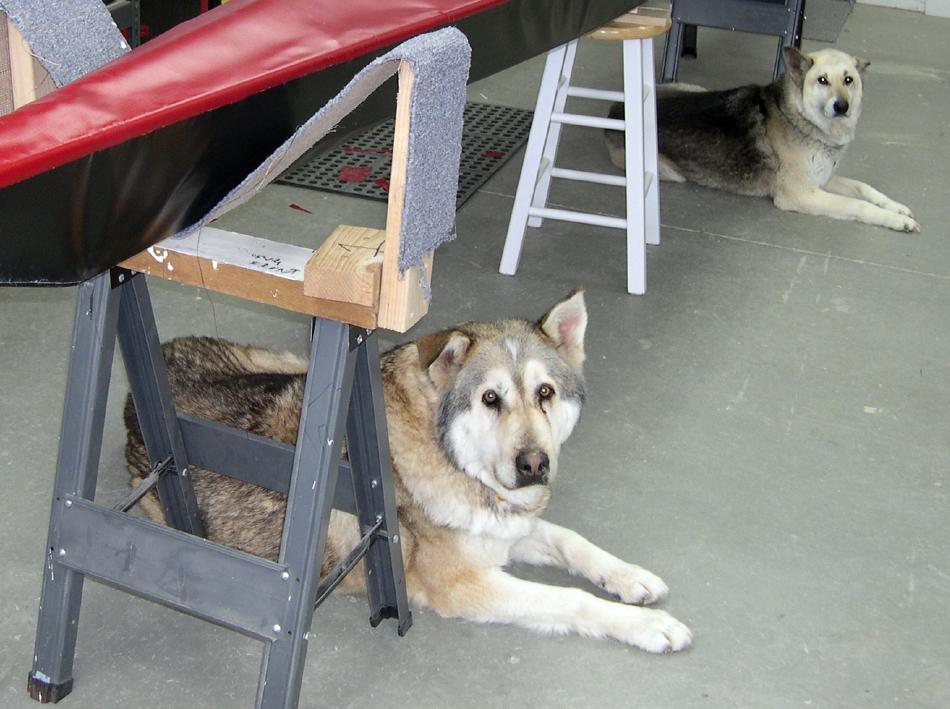

| Nik and Umi - In Loving Memory | Menu Previous Page Next Page |
|

The "Nikumi" Baidarka is named for and dedicated to my beloved wolf hybrids Nikita ( Nik) and Umiak (Umi). During our 14 years together, we spent countless hours in the shop constructing many kayaks. They will always be an essential part of my life. |
|